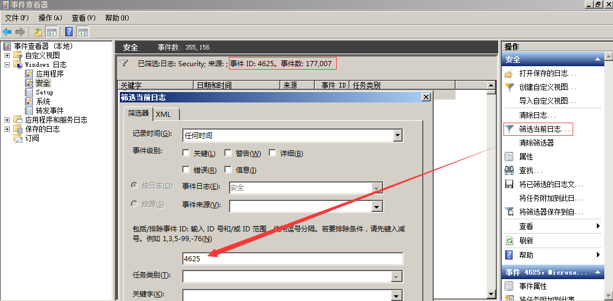
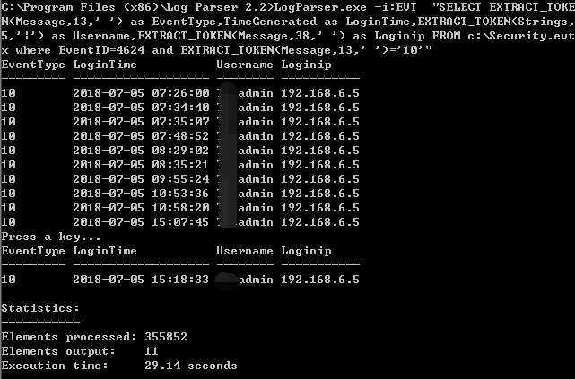
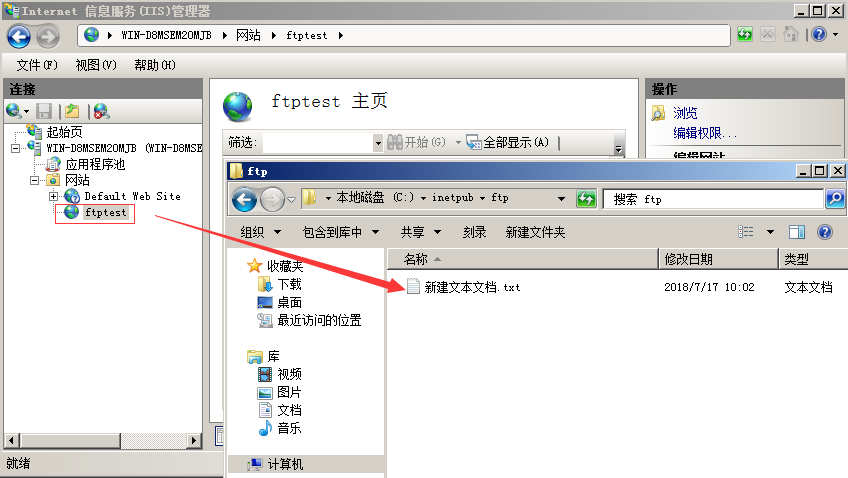

第1篇：FTP暴力破解
0x00 前言
FTP是一个文件传输协议，用户通过FTP可从客户机程序向远程主机上传或下载文件，常用于网站代码维护、日常源码备份等。如果攻击者通过FTP匿名访问或者弱口令获取FTP权限，可直接上传webshell，进一步渗透提权，直至控制整个网站服务器。
0x01 应急场景
从昨天开始，网站响应速度变得缓慢，网站服务器登录上去非常卡，重启服务器就能保证一段时间的正常访问，网站响应状态时而飞快时而缓慢，多数时间是缓慢的。针对网站服务器异常，系统日志和网站日志，是我们排查处理的重点。查看Window安全日志，发现大量的登录失败记录：

0x02 日志分析
安全日志分析：
安全日志记录着事件审计信息，包括用户验证（登录、远程访问等）和特定用户在认证后对系统做了什么。
打开安全日志，在右边点击筛选当前日志， 在事件ID填入4625，查询到事件ID4625，事件数177007，从这个数据可以看出，服务器正则遭受暴力破解：

进一步使用Log Parser对日志提取数据分析，发现攻击者使用了大量的用户名进行爆破，例如用户名：fxxx，共计进行了17826次口令尝试，攻击者基于“fxxx”这样一个域名信息，构造了一系列的用户名字典进行有针对性进行爆破，如下图：

这里我们留意到登录类型为8，来了解一下登录类型8是什么意思呢？
登录类型8：网络明文（NetworkCleartext）
这种登录表明这是一个像类型3一样的网络登录，但是这种登录的密码在网络上是通过明文传输的，WindowsServer服务是不允许通过明文验证连接到共享文件夹或打印机的，据我所知只有当从一个使用Advapi的ASP脚本登录或者一个用户使用基本验证方式登录IIS才会是这种登录类型。“登录过程”栏都将列出Advapi。
我们推测可能是FTP服务，通过查看端口服务及管理员访谈，确认服务器确实对公网开放了FTP服务。

另外，日志并未记录暴力破解的IP地址，我们可以使用Wireshark对捕获到的流量进行分析，获取到正在进行爆破的IP：

通过对近段时间的管理员登录日志进行分析，如下：

管理员登录正常，并未发现异常登录时间和异常登录ip，这里的登录类型10，代表远程管理桌面登录。
另外，通过查看FTP站点，发现只有一个测试文件，与站点目录并不在同一个目录下面，进一步验证了FTP暴力破解并未成功。

应急处理措施：1、关闭外网FTP端口映射 2、删除本地服务器FTP测试
0x04 处理措施
FTP暴力破解依然十分普遍，如何保护服务器不受暴力破解攻击，总结了几种措施：
1、禁止使用FTP传输文件，若必须开放应限定管理IP地址并加强口令安全审计（口令长度不低于8位，由数字、大小写字母、特殊字符等至少两种以上组合构成）。
2、更改服务器FTP默认端口。
3、部署入侵检测设备，增强安全防护。